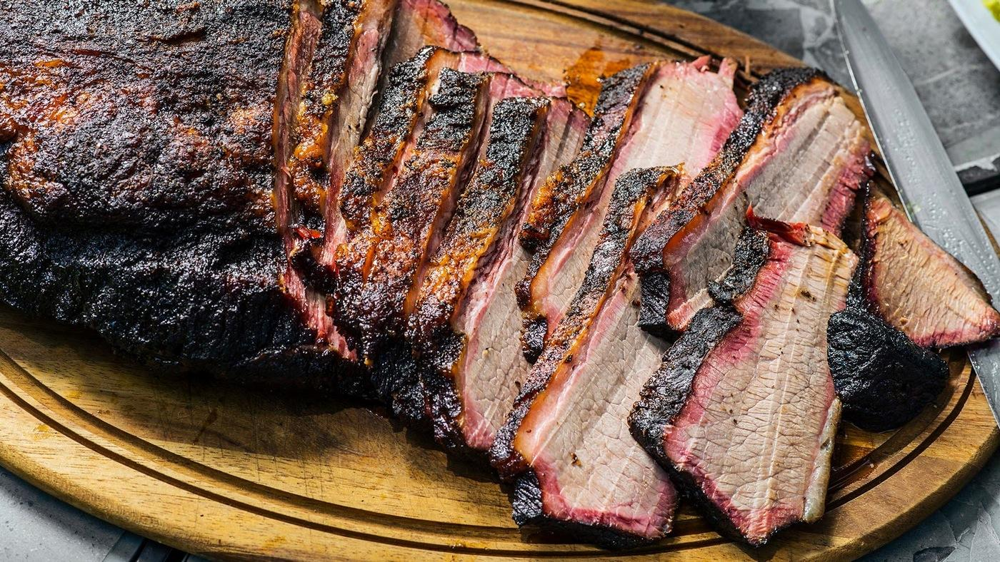
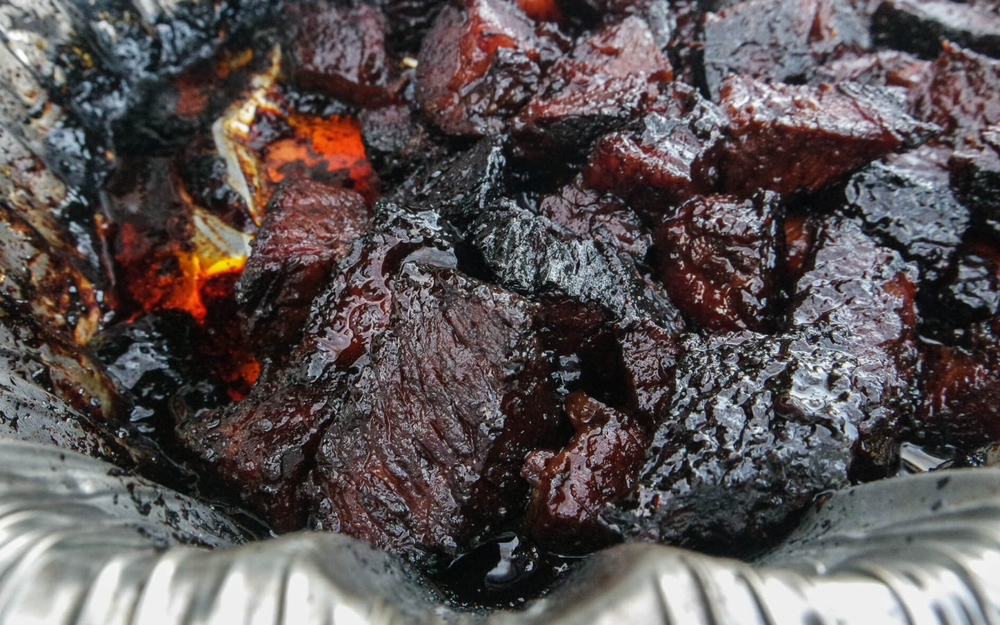
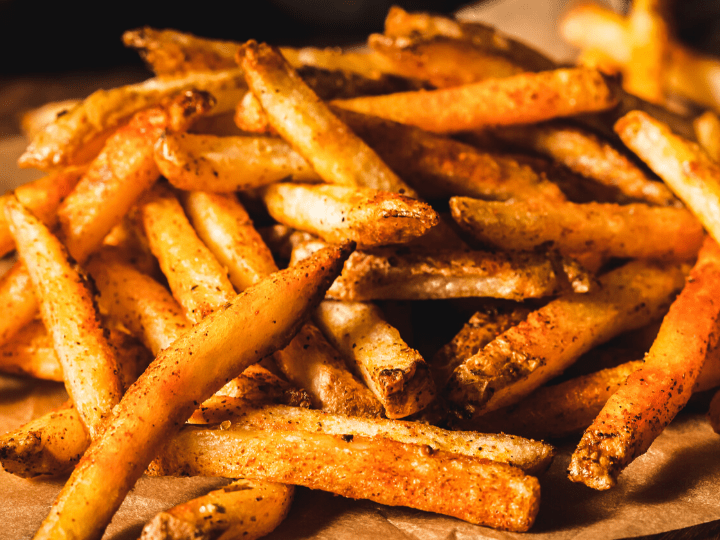
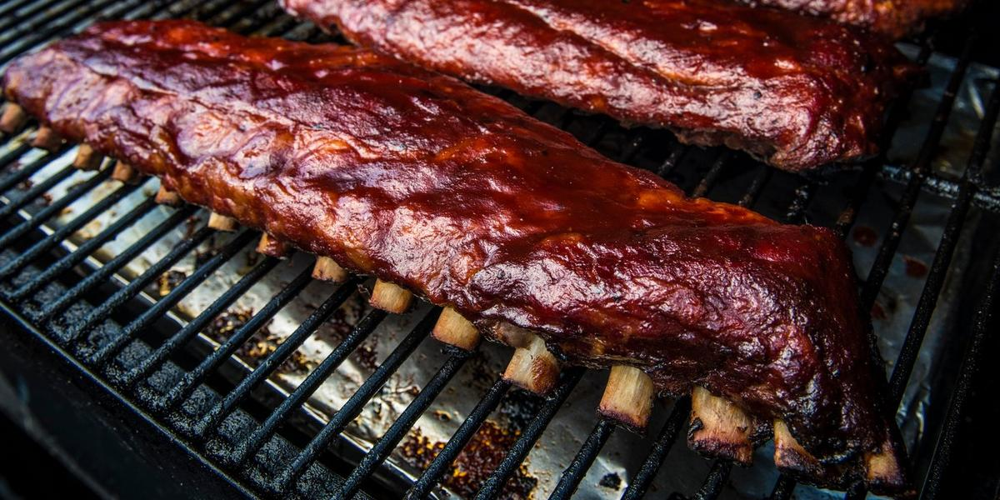

Blanes Binging Blog is the top food blog in the World.
Featured on the food network with guy Fieri and Kanye.
I have been running the blog for 12 years, scince I was 4.
I have won 7 grammies because of my blog.
My mother was a stay at home mom who taught me to cook.
I have been cooking since I was 4 years old.
My Dad also has been smoking food since he could remember.
Thats why I'm a master cook!!!!
|  |  |
|  |  |
Brisket is the best barbeque food, with tons of juicy flavor if cooked low and slow.
Ribs is going to be the most famous with tender sticky goodness.
Burnt ends is true barbeque with going from super hard to tender as can be.
Fries go with any food, but these seasoned fries tie this meal together.